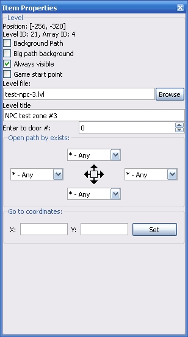

This toolbox allow to you edit properties of one item or item group.

Position - Displaying current coordinated of selected item.
Level ID - ID of level item which defined in the global configuration.
Array ID - the connection indes of selected item.
Background path - under level point image will be displayed path image
Big Background path - under level point image will be displayed same path image, but with larger size
Always visible - with this option the level point will be displayed always. If this flag disabled, level point will be shown only when player open path to them.
Game start point - the important option which need for define the player's start position. This point must exist on the world map if you creating the world map based episode (if you creating hub-based espisode, this point is not need).
Level file - defining the target level file.
Level Title - This is a level title which will be displayed in the game process when player stand over this level item.
Enter to door # - defining the warp Array ID, where player will be entered after start level. If value is 0, the player start level from it's default start point.
Open paths by exits - defining the condition for open path per each side of level point.
Goto coorditanes - If these values are set, this point will teleport playable character to defined location. Also you can select target point in the interactive mode when you press the "Set" button.
Copyright © 2014-2015 Platformer Game Engine by Wohlstand project. All rights reserved.